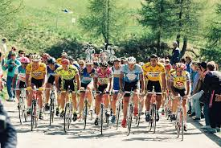

Cycle the Continental Divide

What?
Cycle the Continental Divide is a great way to see the outdoors and to feel like a part of the community! We will take you through some well-known trails in Bozeman through the Gallatin National Forest
When?
The race begins Saturday, February 3rd at 8:00 am. All participants must register by Wednesday, February 1st at 11:59 pm. (See the registration page).
Where?
3394 Bear Canyon Rd, Bozeman, MT 59715 Bozeman, MT US 59715